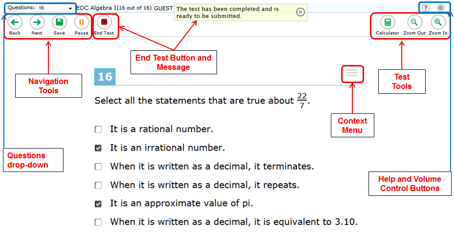
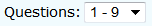
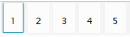
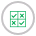

***Please Read***
Click the question mark button to access this Help Guide at any time during your test.
Overview of the Test Site

Basic Test Rules
- You can skip questions and mark a question for review and return to it later.
- Some pages contain multiple questions. You may need to use the vertical scroll bar to view all questions on a page.
- You may review past questions and change your answer (see Pause Rules below).
Test Tools
Each tool or button that you may see in the testing site is described below. There are two types of tools:
- Global Tools are those that appear at the top of the screen.
- Menu Tools are specific to passages and questions, and are accessed by clicking the context menu button [] just above a question or passage.
| Global Tools | Description |
|---|---|
| Help button
|
The [?] button at the top right will open this on-screen Test Instructions and Help Guide window. |
| Navigation buttons
|
The [Back] and [Next] buttons in the top left corner permit you to move between pages on a test.
Note: When multiple questions are grouped together with the same stimulus, a button for each question number appears in the top right. Click these buttons to navigate between questions in the group. |
| Questions drop-down list
 |
This feature enables you to quickly return to a specific test page. Questions that were marked for review will display “(marked).” |
| Question buttons
 |
Some passages have multiple test questions. You can move between questions by using the Question buttons at the top right of the screen. |
| Save button (optional)
|
The [Save] button allows you to manually save technology-enhanced questions. This is an optional feature. If you do not click this button, your answers will still be saved automatically. |
| Pause button
|
The [Pause] button allows you to pause and exit the test.
|
| End Test button
|
The [End Test] button allows you to begin the process of submitting the test. |
| Zoom buttons
|
The [Zoom In] and [Zoom Out] buttons allow you to increase and decrease the size of text and graphics within a single test page. |
| Line Reader button
|
The [Line Reader] button allows you to highlight a single line of text at a time in passages and questions. |
| Notes button
|
The [Notes] button allows you to open an on-screen notepad. You can enter notes for yourself and save them. These notes are global and will remain in the pop-up window throughout the test.
Note: The Notes tool is only available for the ELA tests. |
| Writing Guide button
 |
The [Writing Guide] button opens the on-screen writing guide (Writing tests only). |
| Dictionary/Thesaurus button
|
The [Dictionary] button opens the on-screen dictionary and thesaurus. (Writing test only). |
| Calculator button
|
The [Calculator] button opens the on-screen calculator.
Note: The calculator is available only for Part I of the Grades 7-8 Mathematics and Part I and II of the End-of-Course (EOC) Mathematics tests. |
| Menu Tools | Description |
|---|---|
| Context Menu
|
To see which tools are available for a question or passage, click on the [Context Menu] button just above it. |
| Tutorial
|
Each question has a tutorial video that you can watch to learn more about responding to that type of question. To view the tutorial video, select [Tutorial] from the question context menu. |
| Highlighter
|
The [Highlighter] tool allows you to highlight a section of text in a passage or test question.
|
| Strikethrough
|
For multiple-choice questions, you can "eliminate” an option and focus on the options you think may be correct.
|
Mark for Review
 |
Select [Mark for Review] from the question context menu to mark a question that you want to come back to later. The question is labeled “(marked)” in the Questions drop-down list. To remove the (marked) status, select [Unmark Review Question]. |
| Student Comments
|
Each Mathematics question has a tool that allows you to save a comment about the question. To access this tool, select [Notepad] from the question context menu. |
Stimulus (Passage) Expansion Tool
 |
Some test pages have a passage on the left side of the page. The [Expansion] button allows you to expand the passage so that it takes up most the screen. To collapse it, click the icon again. |
| Text-to-Speech Tool
|
If Text-to-Speech has been turned on for you by your Test Administrator, you may listen to passages, test questions and answer options.
|